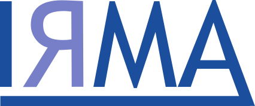
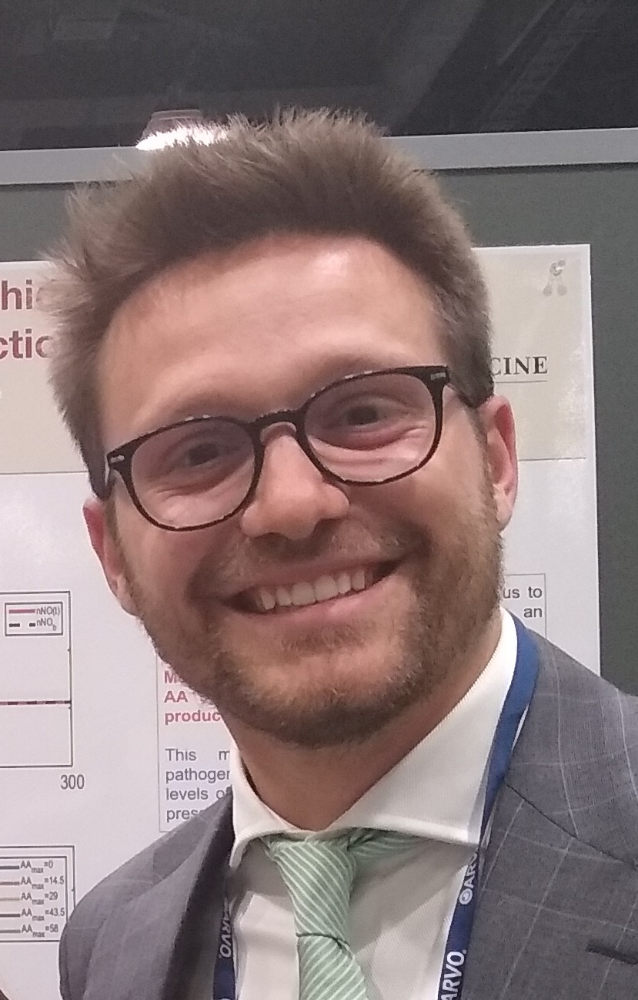

Lorenzo Sala
|  |

Lorenzo Sala |
|
|
|  |
About me:Lorenzo Sala graduated from Politecnico of Milan (Italy) with a BSc in Mathematical Engineering in 2013 and a MSc in Computational Science and Engineering in 2016, and currently holds a position as PhD student in applied mathematics at the University of Strasbourg (IRMA) in France.His main passion and expertise is the synergy between applied mathematics and engineering, with a particular focus on computational models in electronics and biomathematics. His master thesis, entitled A Cellular Scale Model of Aqueous Humour Production, initiated him to research in ophthalmology, which he is continuing in his PhD thesis by developing mathematical models to simulate ocular blood flow, metabolism and their interactions. Contact information:
|
2016 - present: PhD in Applied Mathematics at Université de Strasbourg
Thesis: "Modélisation mathématique et simulation de flux sanguins oculaires et leurs interactions"
Advisors: C. Prud'homme, G. Guidoboni, M. Szopos
2013 - 2016: MS in Mathematical Engineering at Politecnico di Milano
Thesis: "A Cellular Scale Model of Aqueous Humour Production"
Advisors: R. Sacco, A.G. Mauri, G. Guidoboni
2010 - 2013: BS in Mathematical Engineering at Politecnico di Milano
Final Presentation: "Decision Support System per il design di un'area sciistica"
Advisor: F. Malucelli
A web-based interface for ocular hemodynamics and biomechanics analysis via the Ocular Mathematical Virtual Simulator.
L. Sala, C. Prud'homme, G. Guidoboni, M. Szopos, A.C. Verticchio Vercellin, B.A. Siesky, A. Harris.
2019 Annual Meeting of the Association for Research in Vision and Ophthalmology
April 28 - May 2, 2019, Vancouver, Canada.
An operator splitting method for the time discretization of a multi-scale model in ophthalmology.
L. Sala, C. Prud'homme, G. Guidoboni, M. Szopos.
9e Biennale Française des Mathématiques Appliquées et Industrielles
May 13-17, 2019, Guidel Plages (Morbihan), France.